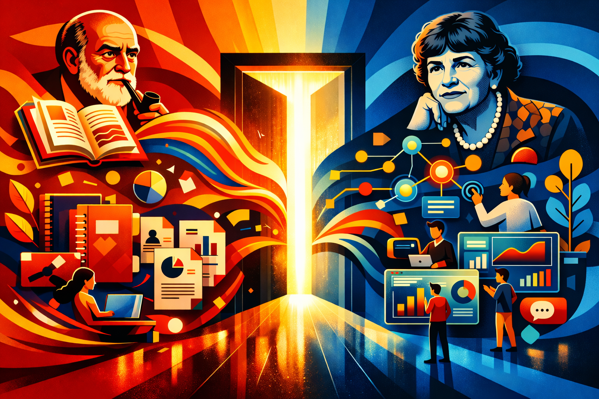
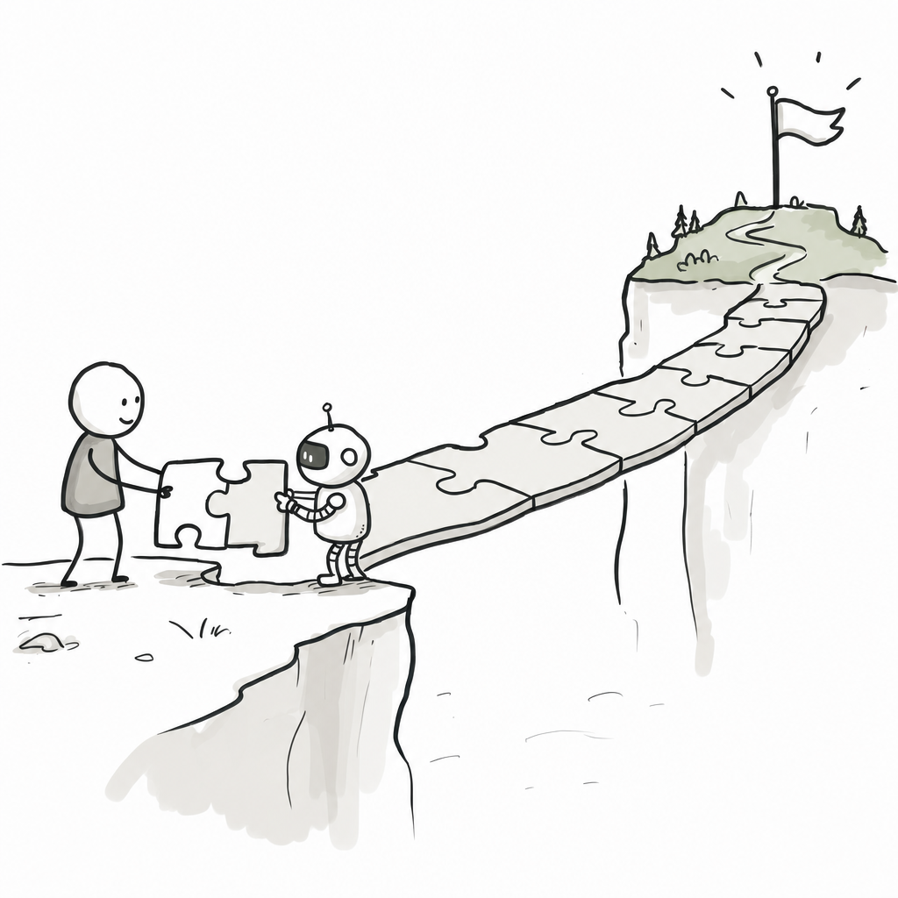

Welcome to Requisite Variety
Welcome to Requisite Variety, the official research blog of TRI's human-centered AI research team!


TRI launched its human-centered AI research effort in 2020 to study and build AI-based systems that augment human capabilities. Known originally as Machine Assisted Cognition (MAC), the team’s mandate focused initially on bringing behavioral science and machine learning to bear on understanding and building decision support systems. The group included experts in causal modeling, human-AI interaction, psychology, and machine learning who worked together to combine theories of human behavior with modeling to develop actionable guidelines, algorithms, systems, and design patterns for an emerging frontier of new human-machine technologies.
Following a rebrand in 2021, our remit blossomed to incorporate a wider spectrum of human-machine interactions, including sociotechnical systems, economic models, agents, product design, virtual and augmented reality, behavioral interventions and modeling, and more. That broader remit naturally fits TRI’s approach to research. As an industrial research lab, TRI seeks to carry out use-inspired basic research. This means, first, that our work is meant to push forward the boundaries of knowledge and understanding. To that end, our work explores the frontiers of behavioral science, human-computer interaction, and machine learning. But real-world impact is our lodestar. Our work has informed a diverse array of work and everyday activities, from design exploration, to everyday driving and charging behaviors, evaluating career decisions, and more.
However, as successful as we have been, the academic publication model is no longer sufficient to meet the moment. We are now at an inflection point in the history of knowledge work. The great debates of our time are happening at a tempo that requires a new means of engagement.
In a recent Substack post (How citations ruined science), David Oks writes:
…I suspect that we’ll have to fundamentally rethink the institutions of scientific life for the age of strong AI. Perhaps, as AI makes it possible to do much more science much more quickly, the culture of science will become more like the culture of engineering—faster, more collaborative, less interested in priority claims. In such a world, the most efficient unit of scientific contribution might be a living document, perhaps even just a GitHub repo: something with data, code, analysis, and a thin narrative layer that AI scientists could read, regenerate, or update as needed.
This platform is our response to the dynamism of this moment.
We will use this platform to generate essays, research briefs (including abstracts of our work that appear in other publication venues), interactive pieces, human-centered model dashboards, and other content. One specific thread of work will focus on cybernetics: an old concept that we believe has new relevance in a world awash with AI agents, dizzyingly complex systems, and rapid changes. Our first essay will focus on the relevance of cybernetics to contemporary AI discourse. Other pieces in that thread will include discussions on agents and agency, double-binds in contemporary organizations, requisite variety (the eponym of the platform), and further discussions on decision theory. Beyond cybernetics, we also plan to publish reactions to key human-AI debates, pieces that explore how AI is changing how we live and work, and artistic and exploratory pieces.
In Amusing Ourselves to Death, Neil Postman wrote with prescience, “as [Aldus Huxley] saw it, people will come to…adore the technologies that undo their capacities to think.” This is a tenuous moment in human history in which it would be all too easy to let the machines fly our minds by wire. This platform is our call to push back, lean in, and engage.
Please join us!